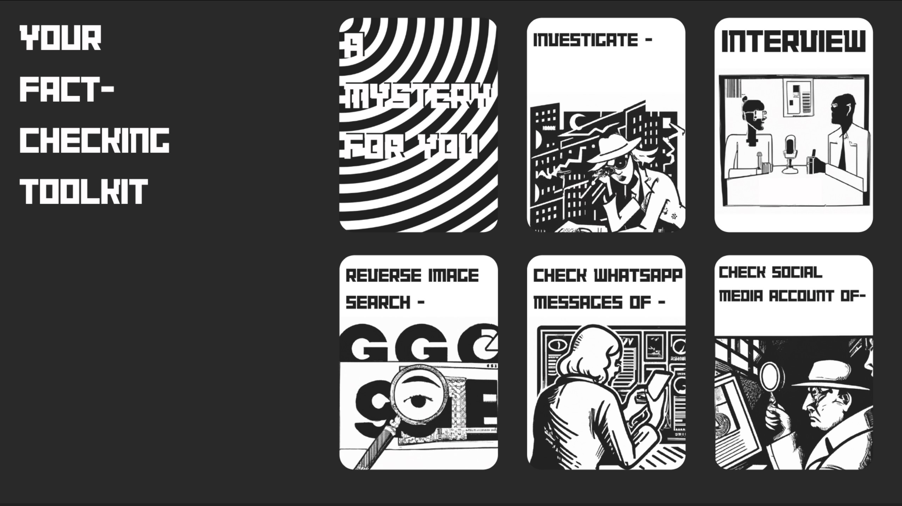

A MYSTERY FOR YOU
Fact-Checking Educational Game Device Powered by ChatGPT

Problem
Our proposal is addressing the pressing need to combat misinformation, disinformation, and hate propaganda in today's digital age, which has become a significant challenge globally. With the rise of digital literacy issues and the proliferation of AI-generated content, particularly through technologies like Large Language Models (LLMs) and Deepfakes, the spread of false information and harmful content has led to real-world consequences, such as communal violence and the erosion of trust in information sources.
Addressing this need is crucial because misinformation and hate propaganda pose significant threats to society, democracy, and individual well-being. The unchecked spread of false information can lead to social discord, violence, and even loss of life. Moreover, as AI technologies, including LLMs, continue to advance, the potential for more sophisticated disinformation campaigns and deepfakes increases. Therefore, developing digital literacy skills, fact-checking abilities, and a critical understanding of AI-generated media is essential for individuals to navigate the information landscape safely and responsibly.
Solution
In order to build Fact Checking skills, an Understanding of AI Generated Media and resilience to Hate Propaganda, a Critical Play Approach has immense potential. (Example). Furthermore, we believe that AI technologies like LLMs can be leveraged to create generative scenario based educational games as well as a way to reflexively question the biases that exist in the AI and within ourselves. “Mystery for You” is a generative scenario based Fact Checking Game powered by an Open AI LLM and a Mini Thermal Printer. With this unique tangible game interface, you take on the role of a Citizen Fact Checker and build your investigative skills as you find the truth (and falsehoods) behind the alerts and updates that are printed out for you.
Over the course of 7 game-days, you use action cards from your toolkit to learn more about the involved actors and circulating media, putting together the facts to make an informed verdict! While the current version of the game is powered by an OpenAI API, with more funding we hope to invest in our own R&D to build more custom taught LLM fine-tuned to our specific use case.

There are hundreds of combinations of the above cards, so you really have a lot of choices in a round of game.
Tangible Interface
Insert corresponding cards into the slots to "investigative local politicians"
The device prints out the update based on your action.
You can make your final decision at anytime by pressing the following buttons: "True", "Mostly True", "Mostly False", "False". The Device will print out the truth for you and you will finish this round of game.
The code for the detective game is shared on Github so you can change the prompt or fine-tune the AI to customize your game experience. To see the code, check the link .
Market
Section: Education, Toy
User: Kids from elementary school to junior high
Customer: Schools, parents
The potential users of "A Mystery for You" are diverse and include students, educators, citizen fact-checkers, parents, and anyone interested in developing digital literacy skills, fact-checking abilities, and critical thinking in the face of AI-generated media. It is particularly relevant for individuals in countries with lower rates of digital literacy and those at risk of exposure to misinformation and hate propaganda.
How is the market currently dealing with the need or such problem? 1. According to an article in Teach For America Magazine, educators have revamped civics classes and logged on to countless news literacy apps promising to produce savvy, critical thinkers able to tell fact from fiction. 2. Scientific American suggests that media literacy education can be used to teach kids how to evaluate and think critically about the messages they receive and to recognize falsehoods masquerading as truth. 3. Edutopia recommends providing students with links to real and fake sites, giving them a checklist to fill out for each site, and then having students decide which one is more trustworthy and why. 4. EdSource suggests educators can provide strategies and tips to help students tackle misinformation. Young people are powerful agents for educating their parents and other family members. If educators teach students to verify misinformation, they will pass on those tools in their community. 5. An article in The Hechinger Report highlights the in-school push to fight misinformation from the outside world. From elementary schools to college classrooms, educators try to train students to be better consumers of information.
Our team
Haoheng Tang
Harvard Graduate School of Design, MDes Mediums, 2nd Year Email:haoheng_tang@gsd.harvard.edu
Mrinalini Singha
MIT School of Architecture+ Planning, SMACT, 2nd Year Email:mrin@mit.edu